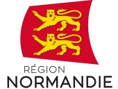
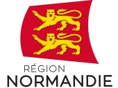
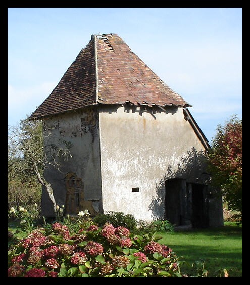
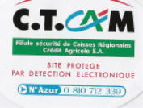

lagodiniere27
https://lagodiniere27.github.io/
Cidre Calvados René LESUR
Ferme de La Godinière
|
|
lagodiniere27 https://lagodiniere27.github.io/ Cidre Calvados René LESUR |
|
dernière mise à jour : 12.09.2022
Notre adresse web :
https://lagodiniere27.github.io/à placer dans vos favoris
Visitez la Ferme Cidricalvaticole de La Godinière... en
cliquant sur l'image
|
- e n t r e z - |
|
|
Accès direct page : Le Noyer en Ouche |
|
Exploitation agricole à louer
A celui ou celle, ou bien un couple qui désire s'installer comme JA (Jeune
Agriculteur),
Je propose une petite exploitation au démarrage dans des conditions exceptionnelles avec, à moyen terme (une petite dizaine d'années, soit lors du renouvellement du bail), une perspective une fois l'exploitation créée et arrivée en vitesse de croisière de pouvoir développer l'activité avec la possibilité de reprendre des surfaces actuellement louées en polyculture dont l'exploitant actuel serait en mesure de faire valoir ses droits à la retraite, potentiel environ 40 ha d'un seul tenant et au même propriétaire, c'est à dire nous-même.
Cette exploitation pourrait être convertie dès le démarrage en BIO. Si la surface disponible au démarrage peut paraître petite par rapport aux exploitations environnantes, (situation en 2022, mais qu'en sera-t-il dans 10 ou 20 ans ? peut-être reverrons-nous des chevaux "pas vapeur" dans la campagne ?) son potentiel peut être conséquent pour autant que l'exploitant soit motivé et courageux comme l'impose cette belle profession qui n'est malheureusement pas reconnue à la hauteur de ce qu'elle mérite par certaines personnes qui lui font plus de mal que de bien, mais le Paysan à toujours de quoi leur répondre pour leur faire comprendre que sans agriculteurs ou éleveurs, les gens n'auraient que des cailloux à se mettre sous la dent...
Que peut-on réaliser comme projet ?
Bien-sûr, c'est en visitant le lieu que l'on peut vraiment estimer les possibilités, néanmoins, une visite de ce site pourra déjà vous permettre d'avoir une idée approximative des possibilités. Attention, actuellement les vergers sont loués en très grande partie et l'activité cidricole que j'ai créée de toutes pièces ne fonctionne plus, mais les vergers font partie des terres qui seront libérées comme je l'expliquais plus haut. L'activité cidricole pouvant être remise en route, ou tout simplement les fruits vendus à l'industrie comme c'est le cas actuellement par notre fermier en place, ce qui présente l'avantage d'avoir du cash à l'automne pour passer un hiver serein...
Par contre, il ne peut y avoir mieux sur l'emplacement et la situation géographique.
Pour vous orienter, je propose quelques idées qui me semblent réalisables, et, compte tenu de la période exceptionnelle que la France à vécu, le métier d'agriculteur ayant été pris avec un peu plus de considération, et en espérant que les consommateurs, pour s'alimenter persévèreront dans l'attitude qu'ils ont eue lors du confinement, je vois très bien d'une part une activité de volailles en plein air, poules pondeuses en plein air, et à côté, par exemple, une production de fruits et légumes en plein champ et une production de plants de légumes et fleurs, en soit de la graine au fruit.
Cette seconde production pourrait, à mon point de vue, se faire sous trois serres, une pour les légumes, une pour les fleurs, la troisième à usage de maternité chauffée par chaudière au bois (plaquettes ou autre), je prendrais en charge l'investissement de l'installation pour soulager le candidat.
Bien évidemment ces productions pourraient être commercialisées en vente directe, en cueillette selon les cas, en vente sur les marchés, voir en gros ou demi-gros selon les opportunités, l'accès à l'exploitation permettant toutes les possibilités imaginables.
Cela sous entend que cela s'adresse en priorité à un JA, mais aussi simplement à quelqu'un désirant créer son entreprise - car il s'agit bien de création et non de reprise - ayant une connaissance dans le domaine de l'horticulture, les cultures légumières, un petit verger en demi-tige pourrait également être rénové pour proposer des pommes de table bien sûr, mais pourquoi pas d'autres fruits, sans toutefois trop s'égarer, je cite simplement quelques possibilités qui me semblent être cohérentes avec la philosophie nouvelle du consommateur et du respect de l'environnement de part et d'autre.
Si toutes les conditions administratives relatives à l'installation sont réunies, l'installation pourrait démarrer sans délai pour mettre en place la saison de la production et sa commercialisation.
Un petit logement pour le candidat, seul ou en couple pourrait être mis à disposition dans des conditions étudiées pour faciliter la mise en place d'un tel projet.
Si vous sous sentez intéressé, ou connaissez quelqu'un, n'hésitez pas à vous renseigner, dans tous les cas, cela ne coûte rien et n'engage à rien, ne passez pas à côté d'une telle opportunité.
|
|
Journées Européennes du Patrimoine 16 et 17 septembre 2017 - de 14h à 18h. La Godinière - Le Noyer-en-Ouche - Eure - Normandie

Deux prétextes ont contribué à ouvrir les portes de cet endroit déjà connu par sa production cidricole :
Inauguration du Sauvetage du Colombier de la Godinière
Commémoration du 100è
anniversaire du retour
|
|
INFORMATION LICENCES VENTE de BOISSONS, nouvelle réglementation depuis 2011
|
|
L e C i d r e |
|
Le Jus de
Pomme sans alcool pour les enfants et leurs parents En plus, Boire du Cidre et du Jus de Pomme, c'est faire un bon geste pour la planète... |
|
 |
Tous nos locaux et installations sont protégés par Nexecur anciennement
CT.CAM. filiale sécurité du GROUPE CREDIT AGRICOLE
CONTACT DIRECT : N° Azur : 0 810 712 339 |
site référencé sur http://haute-normandie.moteurs-regionaux.com/
|
|
Ferme de la Godinière |
Notre adresse web : https://lagodiniere27.github.io/
à placer dans vos favoris
L'abus d'alcool est dangereux pour la santé - Consommer avec modération
Interdit pour la Femme enceinte